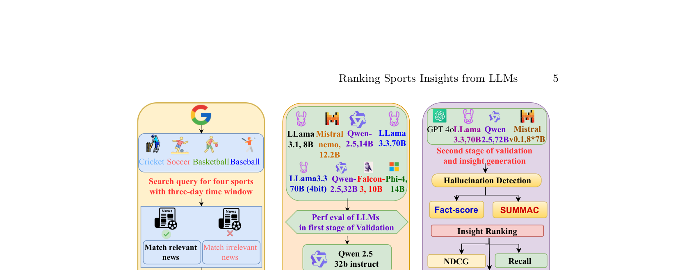
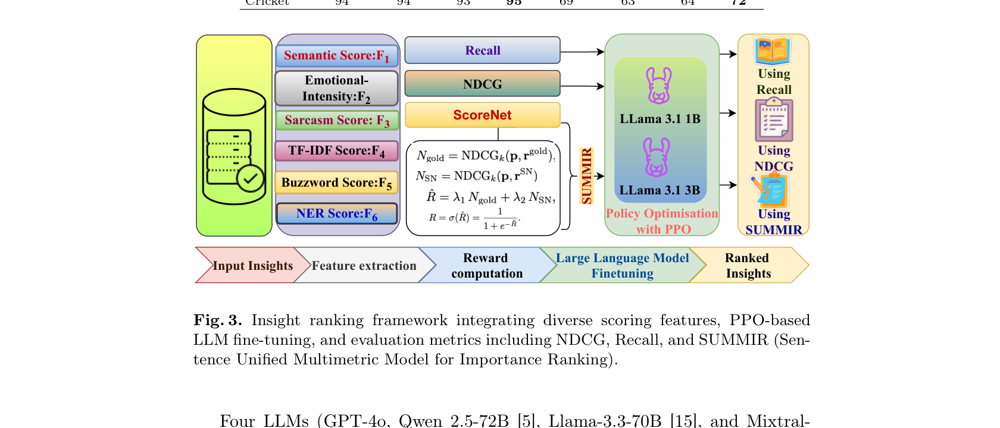

This is probably the work I am most proud of from my time at IIT Patna. SUMMIR (Sentence Unified Multimetric Model for Importance Ranking) started as a research project at the AIML Lab under Dr. Sriparna Saha, grew into a collaboration with Manish Gupta at Microsoft, and ended up accepted at the main track of ECIR 2026, one of the top information retrieval conferences.
The question we were asking: can LLMs reliably convert sports news into meaningful match insights, covering pre-game previews and post-game analysis across cricket, soccer, basketball, and baseball? And more importantly, how do you rank those insights when LLMs have a tendency to hallucinate facts that sound plausible but are completely wrong?
The Problem
Sports journalism generates massive volumes of content around every match. The idea was to use LLMs to automatically extract structured insights from this content. Think: key player performances, tactical shifts, momentum changes, injury impacts. The problem is that LLMs are confidently wrong a non trivial percentage of the time. A model might state that a player scored 47 runs in a match when the actual number was 23, or attribute a goal to the wrong player. In a domain where fans and analysts care about factual accuracy, this is not acceptable.
So we needed a ranking system that could evaluate generated insights along multiple dimensions, with hallucination detection as a first class concern, not an afterthought.
The Dataset
We built a dataset of 7,900 articles across 800 matches spanning four sports. These were filtered using a two step validation pipeline with 8 open source LLMs (Llama 3.1 8B, Mistral Nemo 12.2B, Qwen 2.5 14B, Llama 3.3 70B, and more). From these articles, we generated over 280,000 structured insights using four advanced LLMs, then evaluated factual reliability using FactScore and SummaC (Summary Consistency) metrics.

The Ranking Framework
This is the core contribution. SUMMIR integrates six scoring features into a unified ranking system:
Semantic Score (F1): Measures how semantically relevant an insight is to the source article using sentence transformer embeddings and cosine similarity.
Emotional Intensity (F2): Captures the emotional weight of an insight. Sports content that evokes strong reactions tends to be more engaging.
Sarcasm Score (F3): Detects sarcastic or ironic content that might confuse downstream systems or readers.
TF-IDF Score (F4): Traditional term frequency scoring to capture keyword relevance.
Buzzword Score (F5): Domain specific scoring using a curated sports keyword lexicon with VADER, AFINN, and SentiWordNet sentiment scores.
NER Score (F6): Named entity recognition based person fame scoring using a Historical Popularity Index. If an insight mentions a well known player, it gets weighted higher.
These six features feed into ScoreNet, a custom neural network that fuses them into a final ranking score. But here is where it gets interesting: the reward signal for training comes from LLaMA 3.1 models (1B and 3B) fine tuned with Proximal Policy Optimization (PPO). We trained separate reward models on NDCG (ranking quality) and Recall (coverage) objectives, then combined them.

Results
We evaluated four LLMs (GPT-4o, Qwen 2.5 72B, Llama 3.3 70B, and Mistral 8x7B) across 20 matches per sport. GPT-4o achieved the highest accuracy with FactScores of 95.97% and SummaC scores of 60-72%. Mistral 8x7B scored lower, especially in Baseball and Soccer, showing higher hallucination rates.
The hallucination detection step significantly enhanced the dataset's credibility, ensuring the inclusion of only accurate, reliable insights. The final SUMMIR ranking combined semantic, emotional, and factual signals in a way that consistently outperformed single metric baselines across all four sports.
Authors
Nitish Kumar, Sannu Kumar, S Akash, Manish Gupta (Microsoft), Ankith Karat, Sriparna Saha (IIT Patna)